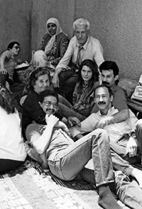
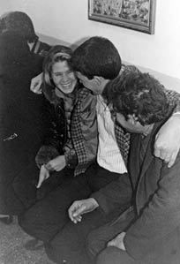

“Yürüyen Ölüleri Görüyordunuz Fotoğraflarda.”
Şadan Beceren27
12 Eylül Darbesi sonrası ağabeyim Sedat Beceren, 1981 yılının sonlarına doğru gözaltına alınıp tutuklandı. Türkiye Devriminin Yolu davasında 146/1’den yargılandı, müebbet hapis cezası aldı ve 10 yıl cezaevinde yattı.
Kenan Evren’in cezaevlerindekilerle ilgili olarak “asmayalım da besleyelim mi” beyanı tam da ağabeyimin davasının karar aşaması yaklaştığı sıralarda yayınlanmıştı. Böylesi bir beyanat, o süreçteki davaların seyrinin daha da kötüye gideceğinin işaretiydi. Kararın çıktığı gün ağabeyimin avukatı şöyle demişti: “Müebbet almış olmamız iyidir, bu ortamda idam kararı da çıkabilirdi”. Mahkemelerde her şey öylesine oldubittiye getiriliyordu ki, biz bile müebbet hapis cezasına adeta sevinmiştik. Hayatta kalacağını düşünmek bile tesellimiz olmuştu.
Ben 12 Eylül Darbesi olana kadar ailemle birlikte Keşan’da yaşıyordum. 13 Eylül günü artık Keşan’da kalmama imkân kalmadığını anlamış ve bir daha ne zaman nasıl döneceğimi bilmeden Keşan’dan ayrılmıştım, yakalandığımda İstanbul’daydım. 1983 yılının Mart ayında gözaltına alındım ve gıyabımda verilmiş olan tutuklama kararı vicahiye çevrildi. Aynı sıralarda kız kardeşim de gözaltına alındı ve İstanbul 1. Şube’de birlikte kaldık. Kardeşim gözaltı süresi olan kırk beş gün dolduktan sonra çıkarıldığı mahkemece serbest bırakıldı. Beni de o sıra görülmekte olan TDKP toplu davasına eklediler. Yargılandım ve 16-17 ay kadar yattıktan sonra 1984 yılında tahliye oldum.
Darbeden Önceki Hayat
Yedi kardeşiz. Babamız işçi, annemiz ev kadınıydı. Sedat ağabeyim dördüncü, ben altıncı çocuktum. Darbe öncesi Keşan’da lise eğitimimi tamamlamıştım ve Tekel’de çalışıyordum. Aslında üniversitede okumak istiyordum ama bunun için şehir dışına gitmem gerekiyordu. Oysa babam ve annem, ülkede yaşanan siyasi çatışma ortamında eğer gözlerinin önünde olmazsam beni kaybedeceklerini düşünüyor, evden ayrılmamı istemiyorlardı. Annem hastaydı, Sedat ağabeyim aranıyordu ve kendisinden haber alamıyorduk. Diğer ağabeylerim babamla çalışıyor, birlikte motor bobinaj işi yapıyorlardı. Kız kardeşim liseyi bitirmişti. Ablamlar evliydiler ve çocukları vardı.
Keşan, sosyal demokratların ağırlıklı olduğu sol hareketliliğin yoğun olduğu küçük bir kasabaydı. Babam çok okuyan, çocukları arasında kız erkek ayrımı yapmadığı gibi hiçbirine baskı da yapmayan, hoşgörülü ve neşeli bir adamdı. Annemiz de hastalığının sorunlarını hiç kimselere yüklemeyen iyi kalpli bir kadındı. Öyle ki şehir dışından zaman zaman gelen mücadele arkadaşlarımız, evlerinde kalabilecekleri başka arkadaşları da olduğu halde çoğunlukla bizim eve gelmek isterdi. Daha sonra birçoğundan duydum: “Siz belki farkında değildiniz ama sizin evinizde çok hoş bir ortam oluyordu, biz özellikle sizin ailenin yemek saatlerinde bir arada bulunmak için size gelirdik” derlerdi. 12 Eylül Darbesi, ailemin ve ailelerimizin büyük kaygılar, acılar ve üzüntüler yaşamasına neden oldu. Annemin koroner kalp hastalığı vardı, rahatsızlıkları o dönemde yaşadığı üzüntülerle daha da artmış oldu.
Bizim devrimci mücadelemiz Halkevi’nde başladı. Fraksiyonel ayrışmalar söz konusu olduğunda dernekler kurulmaya başlandı. Ben, Yurtsever Devrimci Gençlik Derneği’nin kurucu üyelerinden biri oldum. Bölgedeki kitlesel mücadeleleri örgütlüyorduk. Ağabeyim de Halkevi’ndeydi. Daha sonraki ayrışma döneminde mücadelesine Türkiye Devriminin Yolu hareketi içinde devam etti. 1980’lerin başında bir banka eylemi suçlamasıyla aranıyordu.
Özellikle darbenin hemen öncesinde Keşan’da fazla hareket edemez durumdaydık aslında. Polis ne zaman bizi yolda görse elimizdeki çanta, poşeti vs aramak istiyordu. Bizim olduğumuz her yerde bir siyasal ve sosyal hareketlilik bekleniyordu. Biz de siyasi olarak ivmeyi yükseltmeye çalışıyor, yoğun bir hareketlilik içerisinde yaşıyorduk.
Arandığım süreçte de ben ailemle haberleşmenin bir yolunu bulmuştum ve onlardan sürekli haber alıyordum. Darbeden sonra gece yarıları sürekli evler basılıyordu, örneğin bizim ev baskınlarının sık yapıldığı evlerden birisiydi. Daha çok tedirgin etmek amacıyla geliyorlardı. Bir bahane bulmaları yetiyordu. İhbar aldık diye çoluk çocuk herkes ayağa kaldırılıyordu.
Ailemin Tepkisi, Direnci
Her ailede olduğu gibi benim ailemde de tepkiler oluyordu tabii ki. Bizlerin hayatlarından endişe duyuyorlar, zarar görmemizi istemiyorlardı. Ama son derece demokrat bir aileydi. Örneğin, 1 Mayıs’a gideceğim zaman haber verirdim. Babam, onaylamadığı durumda “Sen bilirsin” derdi; onayladığında ise “Kızım bir şeye ihtiyacın var mı?” diye sorardı. Ben onun “Kızım sen bilirsin” dediğinde “Sorumluluk sana ait” dediğini anlardım ama hiçbir zaman “Hayır gidemezsin!” demezdi. Düşünce ve eylemlerimden dolayı ailem tarafından baskı ve şiddet içeren bir tavırla karşılaşmadım. Tam tersi birçok aile gibi gözaltı ve cezaevi süreçlerinde sahip çıktılar ve hep arkamda hissettim onları. Cezaevinden tahliye olup eve geldiğimin ertesi günü, sabah, babam günaydın dedikten sonra evden uzakta geçen zamanımı yıl, ay ve gün olarak hesaplayıp söylediğinde çok duygulanmıştım.
Annem, babam ve ablamlar gözaltına alınmadı. Küçük bir ilçede yaşamanın avantajları oldu. Tabii ki küçük yer olduğu için herkes birbirini tanıyor. Herkes birbirini tanıyınca gözaltı, tutuklanma daha farklı yaşanıyor. Keşan dışındaki ailelerden duyuyorduk, ailece gözaltına alınanlar, ailece işkence görenler vardı ama Keşan’da böyle olmadı. Aileler Keşan’da daha çok ev baskınları, psikolojik işkence ve baskı yaşadılar.
Ben ve ağabeyim aranırken veya cezaevindeyken kardeşlerimin baba eviyle ilgili sorumlulukları da artmıştı, onlar sürekli aileyle birlikteydiler. Tabii herkes çok sarsılmıştı. Mesela eskiden babam her akşam yemekte sadece bir duble rakı içer, ikinciye geçmezdi. Sonra duydum ki biz yakalanıp gözaltına alındıktan sonra bir süre sabahları bile alkol almaya başlamış, evin dışında içiyormuş. Daha sonra babam o dönemi kendisi anlattığında, “Kendi kendime ne yapıyorsun sen böyle deyip toparlandım” diyordu. Tabii yaşadıkları çok acıydı, iki çocuk içeride, diğerini de alıyorlar. Sürekli olarak, her an, çocuklarını kaybetme korkusu…
Darbe Oluyor
Ben tesadüfen o akşam evde yoktum. Gece, ilk baskınlar sırasında bizim eve gelmişler. Misafir olduğumuz arkadaşımız da yeni bir eve henüz taşınmıştı. O nedenle bilinen bir ev olmadığı için o akşam gözaltına alamadılar bizi. Ağabeyim o süreçte zaten aranıyordu, ortalıkta yoktu. Ben de ya gidip teslim olmalıydım ya da bir an önce ayrılmalıydım. Böylece, darbenin ertesi günü Keşan’ı terk etmek zorunda kaldım. Birkaç arkadaşımız kalma kararı aldı. Ben ve bir arkadaşım teslim olmama kararı aldık. Hakkımızda zaten tutuklama kararı çıkarılacağını biliyorduk.
Tabii bir anda çok şey değişti hayatımızda. Artık kendi kimliklerimizle bile yaşayamaz durumda kalmıştık. Bunun için bütün ilişkilerimiz, yaşam biçimimiz, her şey tümüyle değişmişti. Yani illegal yaşamak durumundaydık. Birlikte yaşadığınız insanları, ailenizi ardınızda bırakıyorsunuz, işinizi bırakıyorsunuz, mümkün olduğunca dar bir ilişkiler ağı içerisinde yaşamanız gerekiyor. Ve tabii büyük bir kaygı duyuyorsunuz. Sürekli işkence, ölüm haberleri geliyor. Ülkenin geleceğine dair kara bulutlar dolaşıyor.
Keşan’dan ayrıldıktan sonra İstanbul’a geldim ve 3 yıl boyunca kaçak yaşadım. O süreçte zaman zaman örgütsel ilişkiler içindeydim ama etrafta çok kimse kalmamıştı. Yaşanan yoğun operasyonlar, gözaltılar ve tutuklamalarla ülke açık cezaevine dönmüştü adeta. Ağabeyim hâlâ aranıyordu. O arada birbirimizi bulduk, bir süre görüşebildik. Daha sonra tekrar ayrıldık, yani birlikteydik derken birbirimizi görüyorduk sadece. Operasyonlar oldu bu süreç içerisinde ve ağabeyim gözaltına alındı. Ben halen aranıyordum. Bu arada ailem ağabeyimi ziyarete cezaevine geliyordu ve ben de bir şekilde ailem üzerinden ağabeyimin durumuyla ilgili haber alıyordum.
Arandığım dönemde en büyük korkularımdan biri, annemi veya babamı kaybetmekti. Öylesi bir durumda bile gidemeyeceğimi, cenazelerini bile göremeyeceğimi biliyordum. Bazen rüyalarıma girer, ağlayarak uyanırdım. Onları bir daha sağken göremeyeceğim düşüncesi bana çok acı verirdi.
1983 yılı Mart ayında Keşan’dan gelen bir arkadaşımla buluşacaktım. Yapılan bir ihbar ile gözaltına alındım. İstanbul 1.Şube’de kırk beş gün gözaltı, işkence ve sorgulama döneminden sonra sıkıyönetim mahkemelerince tutuklandım.
Annemle babam biz cezaevindeyken bir ağabeyime görüşe geliyorlardı, bir bana. Bu da maddi olanaklar yüzünden ancak ayda bir kez olabiliyordu. Bizi kısacık zamanlarda görebilmek için Keşan’dan İstanbul’a gelip birkaç gün de kalmak zorundaydılar. Çünkü görüşler de aynı gün olmuyordu, birkaç gün arayla oluyordu. Tabii zordu. Mesela annem vefat ettiğinde ağabeyim hâlâ cezaevindeydi, annemi göremedi. Annemi kaybettiğimizde, ne diyeceğimi, nasıl söyleyeceğimi bilemediğim için bir süre gidemedim ağabeyimin ziyaretine (ağlamalar).
Çok acı ve sert bir süreç olmasına rağmen çok öğretici bir süreçti de aynı zamanda. 10 yılda öğrenilemeyecek birçok şeyi bir yılda öğrendiğimizi düşünüyorum.
Ailelerin Dayanışması
Cezaevi sürecinde ailelerin birbiriyle dayanışması çok müthişti. Örneğin, annemle babam geldiklerinde onlarla ilgilenen Emine Teyze (Emine Akçam) vardı. Görüş zamanları dışında da sürekli birbirleriyle görüşüyor, telefonlaşıyorlardı. Emine Teyze ve bazı analar, eşler ve kardeşler her duruşmaya gidiyorlardı. Kimin duruşması olursa olsun gidiyor ve sahiplik ediyorlardı. Daha çok da anneler gidiyorlardı. Orada, onların arasında ne fraksiyon vardı ne de başka bir şey, onlar anneydiler. O analar bütün o süreçte cezaevlerinin ve mahkemelerin önlerinden ayrılmadılar, adeta nöbet tuttular. Her gün gidiyorlardı cezaevi kapısına. Örneğin benim tahliye haberimi bile aileme Emine Teyze vermiş. Avukatımdan önce arıyor evdekileri. Diyor ki: “Gözünüz aydın Şadan tahliye oldu”. Onlar böyleydiler, böyle yaşıyorlardı ve bu, bir yaşam biçimi olmuştu. Biri tahliye olduğunda kendi çocukları tahliye olmuş gibi seviniyorlardı. Bizim nasıl kendi içimizdeki örgütsel ilişkimizde bir dayanışma var idiyse, onlar da sanki bir örgüttüler. Kendi içlerinde, sürekli birbirlerini gören, haberdar eden, dayanışma gösteren insanlardı. Bu dayanışmanın çok büyük katkısı oldu cezaevi sürecine. Cezaevi önüne giderseniz mutlaka ailelerden birileri vardır; siz o görüşe gidememişseniz bile, bir şey iletilmesi gerektiğinde oradakiler mesajı alır, size iletir. Ağabeyimle ilgili haberler arkadaşlarının anneleri vasıtasıyla bize gelirdi. Böylelikle bir haber ağı oluşmuş oluyordu. Tutuklu yakını olarak yaşadıklarımız, aynı şeyleri yaşamayan başka kişilerle kolay konuşulabilen şeyler değildi. Dolayısıyla bu aileler bir araya geldiklerinde kendilerini de daha iyi hissediyor, birçok şeyi rahatlıkla konuşabiliyorlardı. Annelerin ayakları, aralarında duvarlar

Şadan, ailesiyle ağabeyini ziyarette
bile olsa hem çocuklarına hem de birbirlerine yakın olmak için, doğal olarak oraya, cezaevi önüne götürüyordu bedenlerini.
Metris’ten Çıkıp Metris’e Gidiyorum
Ben tutukluluk dönemim süresince Metris Cezaevi’nde kaldım. Ağabeyim önce Sultanahmet Cezaevi’nde kaldı bir süre. Daha sonra Sağmalcılar, Metris ve oradan da Çanakkale’ye gönderildi. Ben 1984 yılında Metris’ten tahliye olduğumda ağabeyim, Metris Cezaevi’ndeydi. Tutuklu ola-

Şadan, ağabeyi Sedat Beceren’le
rak yattığım cezaevine bu defa “tutuklu yakını” olarak gitmeye başladım. Metris Cezaevi’ndeyken daha sık ziyarete gidebiliyordum ağabeyimi. Daha sonra iş yaşamı başladı tabii, sık sık izin alıp görüşe gidemez oldum. Bayram ziyaretleri oluyordu ya da arada bir izin ayarlayıp gidiyordum.
Ben cezaevindeyken bile her zaman şunu söyledim: Bazı yönleriyle bizim için daha kolaydı. Biz cezaevinde oturup ziyaret bekliyorduk ama ailelerin işi gerçekten zordu. Aynı zorluğu ben de tahliye olduktan sonra ağabeyimi ziyarete gittiğim zamanlar yaşadım. Saatlerce kapıların önünde bekletiliyorsunuz, görüş var deniyor, yok deniyor. İçeride neler olduğunu bilemiyorsunuz. Ben içeride de bulunmuş biri olarak tahmin edebiliyordum tabii ki. Sevdiğiniz insanı, çocuğunuzu, eşinizi, kardeşinizi gelip görmek istiyorsunuz, ona ulaşmak istiyorsunuz ama bir şekilde önünüze engel konuyor. Ve saatler süren çabalardan sonra ancak içeri girebiliyorsunuz. Onca çabanın ardından çok kısa bir ziyaret olacak. 5 dakikada, karşıdan karşıya telefonla, birbirinizin sesini duyacaksınız. Böylesi bir süreçti. Bu süreçlerden en çok etkilenen ailelerdi diye düşünüyorum. Çünkü bizler ideallerimiz ve inançlarımız için birçok şeyi göze almıştık: Cezaevinde yatmak, işkence görmek beklediğimiz şeylerdi ama bizlerden dolayı ailelere yapılanlar gerçekten hoş görülecek şeyler değildi. Eğer bir suç varsa dahi ortada, bunun muhatabı o bireylerdir, hiçbir zaman yakınları olmamalıydı. Özellikle çocuklar, o dönemde büyük bir travma yaşadılar diye düşünüyorum.
Ağabeyim Kalp Krizi Geçiriyor
Ağabeyim kalp krizi geçiriyor Çanakkale Cezaevi’nde. Yıl 1989. Henüz otuz dört yaşında. Kalp krizleri soğuk algınlığı gibi, halsizlik şeklinde de hissedilir ya, çok da genç olduğu için kondurmuyorlar, akıllarına kalp krizi olasılığı gelmiyor. Fakat cezavindeki doktor, “Sedat sen enfarktüs geçiriyorsun” diyor. Bize de cezaevine ziyarete giden aileler haber verdiler. Emine Teyze aradı beni, Şadan, ağabeyin rahatsızlanmış dedi. Ben hemen Çanakkale Cezaevi’ne gittim ama cezaevinde ağabeyimi bulamadım. İstanbul’a gönderildiği söylendi. Hemen İstanbul’a döndüm o gün. Bize bilgi vermiyorlar. İstanbul’a gönderildi ama nereye gönderildi kimse söylemiyor. Önce hastanede dediler. Koşuyolu Kalp Hastanesi’ne gittik, diğer hastanelere baktık. Aramadığımız hastane kalmadı. Gece yarısına kadar her tarafa baktık. Müthiş bir gerginlik tabii. Kalp krizi geçirdi deniyor. Hayati durumundan endişe duyuyorsunuz ama kendisini bulamıyorsunuz, bir cevap alamıyorsunuz. Her an kaybedebileceğinizi, belki de kaybettiğinizi düşünüyorsunuz ama yok, bilgi yok, haber yok, yok... Çok kötüydü. Bunu düşündükçe hep aklıma kayıp aileleri ve yaşadıkları korkunç acılar, çaresizlikler gelir. Sonra Bayrampaşa’da dediler. Ben de o zaman evliydim ve eski eşim avukattı, birlikte cezaevine gittik. Burada da yok dediler. Sağmalcılar Cezaevi’ne defalarca gittik, defalarca gittiğimiz halde bir sonuç alamadık. 15 gün ağabeyimi bulamadık hiçbir yerde. 15 gün…
En sonunda ağabeyim bizi buldu. Ben bir hostelde çalışıyordum. Resepsiyonist bir arkadaşımız vardı. Solcu bir çocuktu ve benim siyasi durumumu da tahmin ediyordu herhalde. Bir gün işyerine telefon geliyor... (ağlamalar) ağabeyim arıyor, kardeşime haber verir misiniz, ben hastanedeyim, şuraya gelsin diyor. Sonra Sağmacılar’da bulduk onu (ağlamalar)…
Bizim aradığımız ve burada yok dendiği süreçte hastanedeymiş. Ertesinde Koşuyolu Hastanesi’nde anjiyo yapıldı. Biz anjiyo sonuçlarını bekliyorduk. Cerrah çıktı, “Baypas olması gerekiyor ama ben ameliyat edemem. Asker postalları içinde baypas olmaz” dedi. Ee peki, ne olacak o zaman? Çok riskli bir durum. Doktor “Yatsın cezasını, tamamlasın, gelsin” diyor. Oysa ağabeyimin müebbet hapis cezası onaylanmış, böyle bir şey mümkün değil. Ve tabii artık her an bir enfarktüs geçirebilir korkusu yaşıyoruz. Baypas ameliyatı sonrası bakım çok önemli, son derece hijyenik bir atmosferde yaşaması gerekiyor. Şimdi daha kolay baypas ameliyatları. O zaman çok daha zordu. Bir de bunun cezaevi koşullarında olduğunu düşünürseniz, hiç hijyenik olmayan koşullar söz konusu.
Bunun üzerine tekrar cezaevine götürdüler tabii ağabeyimi. Bayrampaşa’da hastane bölümünde yatıyor. Ailecek ziyaretine gidiyoruz. Eski eşim hem aile ziyaretine gidiyor hem avukat ziyaretine gidiyor, yani haftada 3 gün görüyoruz. İnsan Hakları Derneği Cezaevi Komisyonu’ndan arkadaşlar da devreye girdiler, bize yardımcı oldular. İnsan Hakları Derneği’nden bir arkadaşımız sürekli ağabeyimin ziyaretine gidiyordu. Bu süreçte çok destek oldu ve çok ilgilendi. Bu şekilde 4 ay geçti.
Basına haber verelim diyoruz ama o da çok hassas bir denge, bu sefer hiç çıkartmayabilirler. Ağabeyimin bir arkadaşının dayısı milletvekiliydi, ben durumuyla ilgilenmek istiyorum demiş (ağlamalar)... Ancak o zaman Adalet Bakanlığı’yla görüşmeler oldu, Tabip Odalarıyla görüşüldü ve ilk defa 6 aylık bir ceza ertelemesi alındı.
Ağabeyim hasta olsa da çıktı, tabii biz çok mutlu olduk. Hemen araştırmalara başladık. Bir şekliyle ameliyatını yaptırmak istiyoruz ve o süreçte Tabib Odası’ndan doktor araştırıyoruz. Ameliyat da riskli, %40 risk veriyor doktorlar, ki çok yüksek bir oran. Nerede, nasıl olacak, bir türlü onu da kararlaştıramıyoruz. Böyle anlatıyor olsam da son derece ağır yaşanmış süreçlerdir bunlar. Bir de ağabeyimin güven duyabileceği bir hekim olması gerekiyor, tamam bu risk karşılanabilir diyecek bir cerrah bulmak gerekiyor. Sonra biz Ankara’ya gittik. Tabip Odası’ndan iki doktorla görüştük ağabeyimle birlikte. Doktorlar ameliyat sonrası tıbbi olarak gerekenleri anlatıp “Kesinlikle burada ameliyat olma, yurtdışına çık, orada ameliyat ol” dediler. Tabii çok özel görüşmede söylenen şeyler bunlar. “Ameliyat olduğun gibi seni hemen cezaevine gönderirler. Kesinlikle ve kesinlikle baypas sonrası cezaevi koşullarında hayatta kalman mümkün değil, böyle bir ameliyattan sonra yaşanmaz cezaevi koşullarında” diyorlardı.
Durum böyle olunca tabii ameliyata da karar veremedik. Bu arada yurtdışına çıkışla ilgili bir şeyler ayarlamaya çalıştık ama olmadı, 6 aylık süre de doldu ve süre aşımı oluşmuş oldu. Kaygılarımız daha da artmıştı. Çünkü tekrar cezaevi koşullarına geri dönmesi gerekecekti.
Tam bu zaman diliminde benim de yargılanmakta olduğum TDKP toplu davası sonuçlandı. Hakkımda açılan davalar ve kanaat sonucu örgüt üyeliğinden 5 yıl 6 ay ceza aldım. Tutuklu kaldığım günler düştükten sonra 8 ay daha yatmam gerekiyordu. Biz tabii ki ağabeyimle görüşüyoruz. Dolayısıyla benden veya eski eşimden dolayı ağabeyime ulaşabilirlerdi. Ben bu riski göze alamadığım için gidip teslim olmaya ve o 8 ayı yatmaya karar verdim. Tekirdağ Cezaevi’ne kalan 8 ayı yatmak için gittiğim sıralarda 1991 İnfaz Yasası çıktı ve 8 ayı 33 gün olarak yattım. İnfaz Yasası ağabeyimi de etkilemiş oldu. Bu yasayla cezası müebbetten indirilince tahliye olmuş oldu. Artık cezaevine dönmesi gerekmiyordu; biz de, o da çok rahatladık.
Araştırdık, iyi bir cerrah bulduk. Ağabeyim de artık her şeyi rahat rahat gözden geçirebilir, kendisi de koşturabilir duruma geldi. Kararını daha rahat koşullarda vermiş oldu. Bir süre sonra da baypas ameliyatı yapıldı. Bu süreci böylece atlatmış olduk.
Tahliye olduktan sonra ağabeyimin yanında ağırlıklı olarak ben vardım. Aileye de ben aktarıyordum durumunu. Bir süre sonra kendisini toparladı. İnsan Hakları Derneği işkence gören, travma yaşayan insanlarla ilgili bir çalışma yapmıştı o zaman. Ağabeyim de katıldı bu çalışmaya. 10 yılını cezaevinde geçirmiş bir insan için çok kısa bir sürede uyum sağladı hayata. Hemen sanki bıraktığı yerden başlamış gibi son derece hareketli yaşamaya başladı. Biz bile yavaş hareket et, bak işte ameliyat olacaksın, enfarktüs geçirmişsin, her an yormamam lazım kendini diyorduk. Hayat dolu bir insandı. Onun için öyle çok zorluk yaşamadı dışarıdaki hayata yeniden uyum sağlamakta.
Cezaevindeyken evlenmişti zaten, eşi de o zamanlar içerideydi, ağabeyimden önce tahliye olmuştu. Bir kızları oldu. Arkadaşları, dostları da çok yardımcı oldular bu süreçte. Kendisiyle barışık bir insandı. Çok keyifli yaşadı.
Ağabeyim çıktı ama geçirmiş olduğu enfarktüste kalbi çok zarar görmüş, damar yapısı da bozulmuştu ne yazık ki. 2006 yılında kaybettik kendisini. Benim çok iyi bir dostum, ağabeyim ve yoldaşımdı. Çok sevdiğim, çok değer verdiğim biriydi.
Sadece ağabeyim de değil, onun gibi birçok değerli arkadaşımızı, dostumuzu yitirdik. 12 Eylül darbecileri yargılansın mitingi için Ankara’ya gittiğimizde, yürüyerek operadan aşağıya iniyoruz, herkesin elinde kaybettiklerimizin fotoğrafları var. Aşağıdan doğru baktığınızda yürüyen ölüleri görüyordunuz fotoğraflarda.
Topluma Yabancılaşma
Zaten artık çağımızın sorunu yabancılaşma. Bizim de daha farklı bir yaşamımızın olması çok mümkündü ama bizler farklı bir dünya mümkün diyorduk ve mücadele ediyorduk bunun için. 1980 yılı öncesi yoğun bir dayanışma, paylaşım ve dostluk yaşıyorduk. İnançlar uğruna hayatından vazgeçebilme, sadece benim değil bizim gibi insanların tümümüzün yaşam kültürü ve yaşam tarzıydı. Darbe sonrası, 1984 yılıydı tahliye olduğumda, bütün değerlerin altüst olduğunu görmüştüm ve uyum sağlamakta zorlanmıştım. Günlük hayat ve teknoloji de değişmişti. Mesela ağabeyim 10 yılın ardından çıktığında ankesörlü telefonu ilk defa görmüştü. Telefon edecek, bilmiyor; nasıl telefon ediyorsunuz bununla demişti. Bu 10 yıllık süreç, günlük hayatta bile bu kadar belirgin farklar yaratmıştı.
Darbe sonrası korku kültürü yaratılmıştı tabii ki. İnsanlar çekiniyorlardı. Bazıları yolda gördüklerinde selam vermeye bile çekiniyorlardı. Kendilerince de haklıydılar aslında. Mesela ben çıktıktan sonra çalıştığım iki işyerine de sivil polis geldi. Biz hayata tutunmaya çalışıyoruz, onların dahi önünü kesmeye, bir şekilde toplum dışı etmeye, hayatla olan bağlarımızı kesmeye çalışıyorlar. Dolayısıyla bizden uzaklaşan insanlar da o gerekçelerinde haklıydılar. Çünkü o kadar çok eziyetler yaşanıyordu ki, onu göğüsleyebilmek de ayrı bir cesaret gerektiriyordu.
Ama bugün de anlam yüklenen değerlerle halen derdimiz var. O anlamda halen yabancısıyız. İşte para odaklı ekonomiler, para odaklı ilişkiler... Ne kadar korumaya çalışırsanız çalışın kendinizi, bir şekilde böyle bir toplumda yaşıyorsunuz. Yani kendimizi koruyabilmek için bile yoğun çabalar sarf etmek durumunda kaldık. Aradan yıllar geçmiş olmasına rağmen hâlâ bugün bile yabancı gördüğüm birçok şey var.
Zaman zaman derdik ki “toplumdan kaçmak sağlıksızlıktır”. Bir kitapta şunu okumuştum: “İki türlü kaçış vardır: Birinde sağlıklı insan sağlıksız toplumdan kaçar, diğerinde de sağlıksız insan sağlıklı toplumdan kaçar.” Şimdi toplumdan kaçarak bir yere varamayız, bu toplumda, burada yaşamak zorundayız; eksisi veya artısıyla ama tüm dünyada yaşanan böylesi bir süreç var. Umuyorum ki, gelecekte insanlık müsaade etmeyecektir daha kötüye gitmesine.
Psikolojik Destek
Profesyonel anlamda psikolojik destek almadık. İHD’nin çalışması için değerlendirme yapıldığında ağabeyimi o zaman çok sağlıklı bulmuşlardı. Ben de ancak çok daha sonra, boşanma sürecinde gitmiştim psikoloğa ilk kez. “Çok kötü değilim ama eskisi gibi keyif almıyorum hiçbir şeyden” demiştim doktora. O da “Bu kadar çok şey yaşadıktan sonra sizin de depresyon geçirmeye hakkınız var” demişti. Çok ihtiyaç hissetmedim açıkçası. Çok sağlıklı olmayan toplumlarda yaşayan insanlar olarak bazı sağlıksız davranışlar içinde olmamızın da çok doğal olduğunu düşünüyorum. Şimdi kendimi biraz daha iyi tanıyorum herhalde psikolojik olarak. Olayları çok abartmamayı, küçük şeylerle mutlu olmaya çalışmayı, tükettikçe değil ürettikçe mutlu olunabileceğini, hayatın asıl amacının mutlu olmak olmadığını biliyorum. İnce belli bardaklar mesela büyük hayalimizdi, cezaevinde bunun hayalini bile kurabilmek bizi mutlu ediyordu.
Son 32 Yıl
12 Eylül Darbesi ve süreci demokrasiye, halka, insanlığa karşı işlenmiş bir suç. 24 Ocak ekonomik kararları uygulanacaktı, bir tek hedefi biz değildik, bütün muhalefeti yok etmekti amaç. 24 Ocak kararlarının uygulanması, bir toplum mühendisliği projesiydi. O noktada da tabii ki deneysel olarak bizim hayatlarımıza dokundu. Örneğin tanıdığım bazı gençler eğitimini tamamlayamadı. Ben 3 yıl arandım, 2 yıl cezaevinde yattım, 1.5 yıl çalışamadım. Şimdi 50’li yaşlarımda olduğumu düşünürsek yaşamımın onda biri benden çalındı. O zamanlar benim yaşımda olanlar üniversite eğitimlerini bitirmiş, mesleklerine başlamışlardı. Aynı sırada biz ise, hayata neresinden tutunalım diye bakıyorduk. Bir de tabii işyerlerimize gelip bizi toplum dışı etmeye de çalışıyorlardı. Artı olarak bu tür şeyleri de yaşıyorduk. 12 Eylül’ün yaptığı şeylerdi bunlar. Bir de 10 yıl yatan, 15 yıl yatan ve daha sonra hayata tutunamayan arkadaşlarımız da oldu. Darbe öncesinde ve sonrasında bir yığın sağlık, ekonomik ve sosyal sorunlarla karşılaştılar tabii. İşsiz olan arkadaşlarımız ve onların aileleri bunlardan etkilendi. O zaman çocuğu olan arkadaşlarımız vardı. Yaşamları büyük bir kesintiye uğradı. Onun için aslında bir kuşak üzerinde gerçekten ağır sonuçları oldu. İnsanlar yine de direndiler bu sürece karşı, hareketsiz kalınmadı. Hayatta kalmak, ayakta kalmak, onurunu korumak, bunlar hep yoğun süreçlerdi. Yine de keşke dediğim şeyler olmadı. Bilerek ve isteyerek kimseye zarar vermedim. Geriye dönseydiniz ne yapardınız diye sorarsanız, daha çok okurdum herhalde derim. Koşturmaktan pek okumaya vaktimiz olmamıştı. Hayal kırıklıklarım oldu mu? Birçok anlamda olmuştur. Politik anlamda da oldu, daha sonra bireysel yaşamlarımızda da oldu. Hedeflediğimiz şeyler, gerçekleşmesini istediğimiz şeyler olmayınca hayaller kırılıyor demektir zaten. Yine de kısa vadede değil ama uzun vadede umudum var. Bugün yeryüzünde yaşanan katliamlara baktığımızda bunların ortaçağdan ne farkı var? Kanıksadık aslında. Çok kötü bir şey. Ölümleri kanıksadık. Toplum olarak buraya vardık. 10 kişi ölmüş, 7 kişi ölmüş, şurada bir soykırım yaşanmış... Yaşadığımız çağda bunlar var. Geçen yaz Keşan’da yazlıktaydım, bütün tatilciler yüzümüzü denize dönmüşüz, arkamızda Romanlar, çadırlarda 150 kişi, elektriklerini kesmişler, sularını kesmişler, mum ışığında oturuyorlar, en kötü işleri yapıyorlar, yaşamaya çalışıyorlar. Bunlara toplum olarak maalesef duyarsız kalındığı sürece bu işler hep böyle biraz ötelenecek gibi. Kısa vadede umudun olmamasının göstergesi, biraz toplum olarak duyarsızlığımız herhalde. Biraz da “Gemisini yürüten kaptan”, “her koyun kendi bacağından asılır” vs. Aslında bence: “Kurtuluş yok tek başına ya hep beraber ya hiçbirimiz”...
Türkiye solunun dağınıklığını da sadece darbeye yormuyorum. Biraz egolarımıza yoruyorum, “Küçük olsun benim olsun” misali! Gökkuşağının olmadığı yerden pek bir şey çıkmayacağına inanıyorum. Toplum olarak farklılıklarımızla bir arada bulunan ama pek bir arada yaşayamayan bir kültüre sahip olduğumuzu düşünüyorum. Dolayısı ile bu kendisini solda tanımlayan bizler için de geçerli. Şu an herhangi bir örgütlenme içerisinde değilim ama gökkuşağını bekliyorum. Hâlâ bekliyorum. Her türlü adaletsizliğin ve hak ihlallerinin karşısında yer alan, özgürlük ve demokrasi taleplerini her koşul altında savunan ve geniş halk kesimini arkasına alabilen bir sol hareketin umut vaat edeceğine inanıyorum.
Önceden sol hareketin başarılı olmasının en önemli nedenlerinden bir tanesi insanların yaşam alanlarında mücadele ediyor olmasıydı. Reel şeylerdi. Bizler insanların hayatlarına ne kadar dokunabiliyorsak o kadar varız. Hayata dokunabilmek aslolan. Başlangıçta AKP’nin ivme kazanması bu nedenleydi. Geçmişte biz böyle örgütleniyorduk. Onun için de bugün o alanları dolduramıyoruz. O alanlara öyle girmek gerekiyor gerçekten.
Farklı arayışlar ve farklı yaratıcılıkların olması gerekiyor. Mesela, artık eylemlere baktığımda çok renkliliği çok olumlu buluyorum, herkes kendini ifade ediyor. Feministler, eşcinseller, bütün ötekileştirilenler, Romanlar, Aleviler, Kürtler... Biz hepimiz bu ülkenin insanlarıyız ve bu ülkede yaşamalıyız. Buna empati bile demiyorum, hoşgörü demiyorum, hoşgörü ve empati yukarıdan bakan bir şey: herkesin yaşam hakkı var, herkes bir diğerinin yaşam hakkına saygı göstermek zorunda. Biz Kürtlere hoşgörülü, Romanlara hoşgörülüyüz. Biz kimiz ki hoşgörü göstereceğiz? Onların doğuştan getirdikleri yaşam hakları var, bizim olduğu kadar, herkesin olduğu kadar, azınlıkların çoğunluk kadar hakları var.
En Çok Canımı Acıtan
Çocuklar daha ağır yaşadı aslında o süreci (ağlamalar). Üzülüyorum onlar için. Duygulanmamak mümkün değil. Konuşamadık. Çok yıllar sonra yeğenim o dönem başına gelen bir durumu anlattı. Keşan’da dışarıya çıkıyor çocuk, jandarma geliyor. O zaman karşılıklı oturuyorlar annemlerle. Eve girip çıkarken kapı ziline sık basmasın diye çocuk, kapı kolunu yanına alıyor, kapıyı tekrar geldiğinde kendisi açabilmek için. Çocuk daha küçük, jandarma kapı kolunu alıyor çocuğun boğazına dayıyor; teyzen nerede, dayın nerede diye sıkıştırıyor. Eve geldiğinde de kimseye anlatamıyor, üzülmesinler diye sanıyorum. Yeğenim bir gece yemeğe davet etti beni, orada alkol aldıktan sonra bunu ancak yıllar sonra söyleyebildi. Üzmemek için söylememişti (ağlamalar). Çok üzülmüştüm. En çok acı duyduğum şey çocuklara yapılanlardır. Çocuklara yapılan zulüm gerçekten hiç affedilmemeli. Aslında aşırı hassas insanlarız, o zaman da benden dolayı kimse zarar görmesin istiyordum. Bir ölçüde bunu başardık ama küçücük bir çocuğun böyle bir şey yaşaması, bunu kimseye anlatamaması ve böyle bir şeye benden dolayı maruz kalması beni çok üzdü. Onu koruyamadım diye düşündüm ama elimizde değildi aslında koruyabilmek. Bu çok küçük bir şey aslında çok daha korkunç şeyler yaşandı. Annesiz, babasız kaldılar çocuklar. O çocukların gözünün önünde ailelerine işkenceler yapıldı, işkence yapmakla tehdit edildiler, çok ağır şeyler yaşandı bu süreçte.
Örneğin, ölüm oruçları döneminde ben tahliye oldum. Yemek yerken sofrada, ölüm orucunda ölenlerin haberlerini aldım. Bunlar gerçekten insanın içini çok acıtan şeyler.
12 Eylül Davası
Bu davanın açılması 12 Eylül Darbesi’ni tartışılır hale getirdi aslında. Konuşulur hale getirdi, bu nedenle olumlu buluyorum. Davayı tabii ki kendi istedikleri boyuta taşımaya çalışıyorlar. Mümkün olduğunca davanın bir tarafından tutup bunu olması gereken yere taşımak gerektiğine inanıyorum. Biz ilk duruşmaya Ankara’ya gittiğimizde, bildiri dağıtıyorduk orada. 12 Eylül’ü duymamış, bu ülkede yaşayan, bilmeyen bir yığın insan var. Bir dönem özellikle dava açıldığında televizyonlarda bütün kanallarda gündemde kaldı. Bunun, bu ülkenin tarihinin bilinmesi adına ve yaşananların yansıtılması adına bir fırsat olduğunu düşünüyorum ve buna sahip çıkılması gerektiğini düşünüyorum.
Sonuçlar anlamında da tabii ki bu 12 Eylül Darbesi ve sonuçları sadece duruşmayla çözülecek bir şey değil. Daha detaylı incelemeler, araştırmalarla bütün haksızlıkların, hak ihlallerinin gün yüzüne çıkarıldığı ve suçluların da cezalandırıldığı, darbelerin mahkûm edilmesi ile gerçekleşebilir. Kenan Evren mahkemeye getirilmeli. Berfo Ana’yı Ankara Adliyesi’nin önünde gördüğümde çok duygulandım. Bir daha bu tür darbeler olmaması adına, geçmiş bilinmeli. 12 Eylül ruhunu yasalardan kaldıran gerçekten demokratik, eşit ve özgürlükçü bir anayasanın yapılmasını sağlamalıyız.
Yaşananlara bakıldığında sembol değil aslında Kenan Evren. Ama şu an gelinen aşamada, yargı aşamasında asmayalım da besleyelim mi diyorlar ya, hayır besleyelim, asmayalım. Bir gün avukatımla bir yerde oturuyorduk, Şadan gelsene, seni birileriyle tanıştıracağım, dedi. Gittik, iki tane adam oturuyor. Tanıdın mı bunları dedi. Tanıyamadım dedim. Bak dedi gördünüz mü bizim çocuklar ne kadar affedici. Bana da döndü dedi ki, bunlar sana ceza verenler, sizin heyettekiler bunlar. Adamların yüzüne bile bakmamışım. Çünkü zaten yargılamaları biliyorduk biz. Orada A kişisinin ya da Z kişisinin olup olmaması bir şeyi değiştirmiyordu ki. Biz tahliye olduktan sonra kuvvet komutanları nasıl bunları bırakırsınız diye fırça atıyorlardı dosyalar geldiğinde. Orada o sonuç değişmeyecekti. Orada insanlar belirleyici olmadı, o sistemdi esas olan. Onun bilincinde olduğum için yüzlerine de bu nedenle çok dikkatli bakmamıştım herhalde diye düşündüm. Muhatabımız sistemdi ve bu sistem de bunları bir el kullanarak yaptırdı. Onun için bu ellerin de cezalandırılması gerekiyor. Çok da basit değil durum, insanlar işkencede öldürüldüler, asıldılar. Bu kararları verenler, bunların hesabını vermelidirler. Cesaret, korkuya rağmen korkarak yapılan bir şeydir. Yoksa diğeri aptallıktır zaten, farkında olmamaktır. O gün de cesaret gösteren, direnen insanlar vardı. Biz bunu 1. Şube’de de gördük, cezaevlerinde de gördük.
Ülkesini ve halkını seven, daha iyi bir dünya özlemiyle yola çıkan ve bu uğurda yaşamını yitiren, bedel ödeyen, 12 Eylül Darbesi’nin üzerlerinden bir silindir gibi geçtiği 78 kuşağı ve onların ailelerinin yaşadıkları Türkiye demokrasi tarihinde kara bir leke olarak kalacaktır. Artık darbelerin yaşanmaması adına, yapılan her çalışmanın değerli olduğuna inanarak, çabalarınızdan dolayı teşekkür ediyorum.
27 1959 doğumlu. Serbest muhasebeci, mali müşavir. Ağabeyi Sedat gözaltına alındığında Şadan, 21 yaşındaydı.